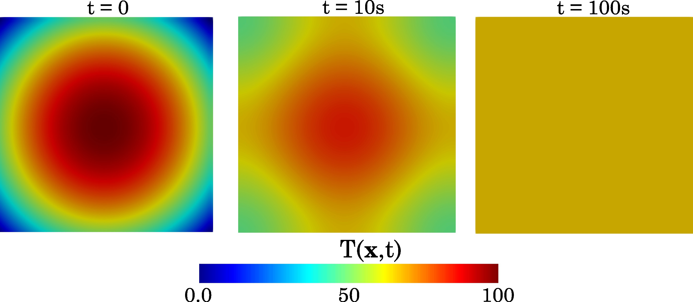

Tutorial I · 2‑D Heat‑Conduction Example
Objective – show an explicit PetIGA implementation for the transient heat‑diffusion equation and how to run it on your cluster.
1 · Problem description
| Item | Value / comment |
|---|---|
| Domain | 2‑D square, side length \(L = 50\). |
| Boundary conditions | Periodic on all four edges (model a repeating tile). |
| Initial temperature | Parabolic “hot spot” centred at \((L/2,L/2)\): \(T(\mathbf x,0)=100\Bigl[\,1-\bigl(\tfrac{r}{0.5L\sqrt{2}}\bigr)^2\Bigr]\) where \(r=\|\mathbf x-\mathbf x_c\|\) and values below 0 are clipped. |
| Material property | Thermal diffusivity \( \alpha = \dfrac{\kappa}{\rho c_p}=5.0 \). |
| Discretisation | \(\Delta x = 0.5\) ⇒ \(100\times100\) elements; time step \(\Delta t = 5\times10^{-4}\). |
| Heat source | None (\(q=0\)). |
2 · Strong form
Find \(T(\mathbf x,t)\) such that
\[ \rho\,c_p\;\frac{\partial T}{\partial t} - \kappa\nabla^{2}T = 0 \quad \text{in}\; \Omega=[0,L]^2,\; t>0 \]
with periodic boundaries
\[ T(0,y,t)=T(L,y,t), \qquad T(x,0,t)=T(x,L,t), \]
and initial condition
Because we prescribe periodicity, there is no Dirichlet (\(\Gamma_D\)) or Neumann (\(\Gamma_N\)) boundary—the domain wraps onto itself.
You can adjust \(L,\;\alpha,\;\Delta x,\;\Delta t\) via command‑line flags when running the example.
3 · Get the demo codes from heat2d
This folder contains heat2D.c file, a makefile, a post processing file named post2.py and a batch script for running in the cluster
4 · Quick insights into the code
4.1 Residual assembly
The Residual() callback implements the weak form after multiplying the PDE by a test function, integrating by parts, and inserting the B‑spline shape functions. For heat conduction the residual per basis function \(N_a\) is
coded as:
PetscErrorCode Residual(IGAPoint pnt,
PetscReal t,const PetscScalar *U,
PetscScalar *Re,void *ctx)
{
AppCtx *user = (AppCtx *)ctx;
PetscScalar sol;
PetscScalar grad[2];
IGAPointFormValue(pnt,U,&sol);
IGAPointFormGrad (pnt,U,&grad[0]);
PetscReal alpha = user->alpha;
const PetscReal *N0,(*N1)[2];
IGAPointGetShapeFuns(pnt,0,(const PetscReal**)&N0);
IGAPointGetShapeFuns(pnt,1,(const PetscReal**)&N1);
PetscScalar (*Ra)[1] = (PetscScalar (*)[1])Re;
PetscInt a,nen = pnt->nen;
for (a=0; a<nen; a++) { Ra[a][0] = -alpha*(N1[a][0]*grad[0] + N1[a][1]*grad[1]); }
return 0;
}
4.2 Initial condition
Modify the temperature profile in FormInitialCondition():
4.3 Output Monitor
OutputMonitor controls the frequency of writing the .dat file which contains the control variables. It also computes the lumped mass matrix vector which is substitued to ts->vec_lump.
To change the frequency of printing the output files change the following in the OutputMonitor() function
PetscInt fac = 2.0/user->dt;
if(step%fac==0)
{
// PRINTING OUTPUT FILES
sprintf(filename,"./heat%d.dat",step);
ierr = IGAWriteVec(iga,U,filename);CHKERRQ(ierr);
}
4.4 Geometry an boundary setup
IGA iga;
ierr = IGACreate(PETSC_COMM_WORLD,&iga);CHKERRQ(ierr);
ierr = IGASetDim(iga,2);CHKERRQ(ierr);
ierr = IGASetDof(iga,1);CHKERRQ(ierr);
// setting boundary conditions
IGAAxis axis0;
ierr = IGAGetAxis(iga,0,&axis0);CHKERRQ(ierr);
ierr = IGAAxisSetPeriodic(axis0,PETSC_TRUE);CHKERRQ(ierr);
ierr = IGAAxisSetDegree(axis0,p);CHKERRQ(ierr);
ierr = IGAAxisInitUniform(axis0,user.Nx,0.0,user.Lx,k);CHKERRQ(ierr);
IGAAxis axis1;
ierr = IGAGetAxis(iga,1,&axis1);CHKERRQ(ierr);
ierr = IGAAxisCopy(axis0,axis1);CHKERRQ(ierr);
ierr = IGAAxisSetPeriodic(axis1,PETSC_TRUE);CHKERRQ(ierr);
ierr = IGASetFromOptions(iga);CHKERRQ(ierr);
ierr = IGASetUp(iga);CHKERRQ(ierr);
4.5 Time-stepping driver (explicit Euler)
/* RHS only */
ierr = IGASetFormRHSFunction(iga, Residual, &user);CHKERRQ(ierr);
/* lumped mass vector placeholder */
ierr = IGACreateVec(iga,&user.lump);
ierr = VecSet(user.lump,1.0);
/* create explicit TS object */
TS ts;
ierr = IGACreateTS3(iga,&ts);CHKERRQ(ierr);
ierr = TSSetProblemType(ts, TS_LINEAR);
ierr = TSSetMaxTime(ts,user.total_time);CHKERRQ(ierr);
ierr = TSSetTimeStep(ts,user.dt);CHKERRQ(ierr);
ierr = TSSetExactFinalTime(ts,TS_EXACTFINALTIME_MATCHSTEP);CHKERRQ(ierr);
ierr = TSSetType(ts,TSEULER);CHKERRQ(ierr);
/* output monitor */
if (output) {ierr = TSMonitorSet(ts,OutputMonitor,&user,NULL);CHKERRQ(ierr);}
ierr = TSSetFromOptions(ts);CHKERRQ(ierr);
/* initial condition and solve */
Vec C;
ierr = TSGetSolution(ts,&C);CHKERRQ(ierr);
ierr = FormInitialCondition(iga,C,&user);CHKERRQ(ierr);
ierr = TSSolve(ts,C);CHKERRQ(ierr);
5 · Build instructions
Copy the files into the demo/heat/ folder of your PetIGA clone (or any folder in $PETIGA_DIR/demo):
Compile:
```bash
make heat2D
```
6 . Running the solver
Edit run_heat2d.sh to suit your cluster queue (Slurm, PBS, etc)
Example run on 128 MPI ranks
#!/bin/bash
#SBATCH -t 04:00:00
#SBATCH -n 128
#SBATCH -o "%x.o%j"
#SBATCH -e "%x.e%j"
#SBATCH --job-name="heat2D"
#SBATCH --mem-per-cpu=1G
#SBATCH -p RM
# Run the main program
mpirun -np 128 ./heat2D -N 100 -dt 5e-4 -total_time 100.0 > "${SLURM_JOB_NAME}.o$id"
7 · Results & visualisation
Expected output files
heat0.dat,heat4000.dat, … (PetIGA solution binary snapshots)lump.datfile containing the lumped mass matrix vectorigaphase.datfile containing IGA metadata necessary for postprocessing
Convert .dat files to VTK for ParaView
from igakit.io import PetIGA,VTK
from numpy import linspace
import glob
from multiprocessing import Pool
import time
# read in discretization info and potentially geometry
nrb = PetIGA().read("igaphase.dat")
# enter the refinement factor
refinement = 2
# write a function to sample the nrbs object
uniform = lambda U: linspace(U[0], U[-1], int(len(U)*refinement))
# function to print the fields into VTK files
def print_file(infile):
sol = PetIGA().read_vec(infile,nrb)
outfile = infile.split(".")[0] + ".vtk"
VTK().write(outfile, # output filename
nrb, # igakit NURBS object
fields=sol, # sol is the numpy array to plot
scalars={'T':0})
if __name__ == '__main__':
list_of_files = glob.glob("heat*.dat")
t0 = time.time()
p = Pool(24)
p.map(print_file, list_of_files)
t1 = time.time()
print('Total post-processing time = %f secs'%(t1 - t0))
heatXXXX.vtk files in ParaView to visualise the temperature field.

Left → initial condition (t = 0); centre → intermediate state (t = 10s); right → steady-state (t = 100s) where the field has relaxed to T ≈ 66.